Tako, Chiba: things to do, food and stays
Tako · Chiba
Tako
Highlighted on the Chiba map.
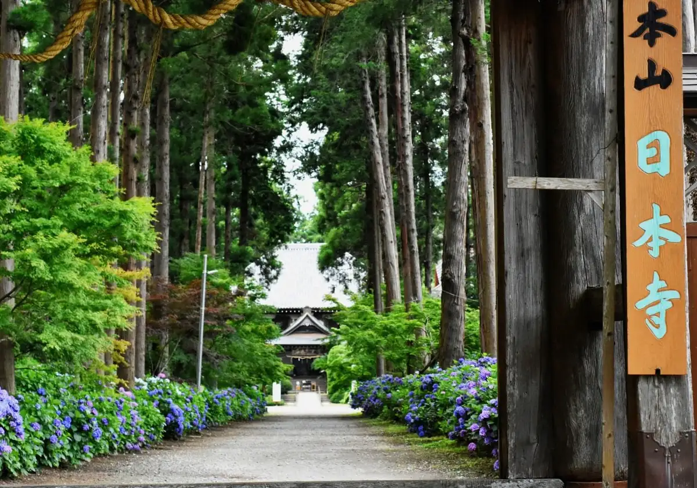
Stay
大三川邸
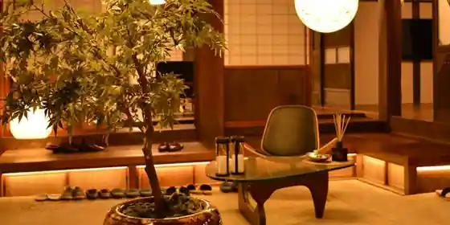
Omi Kawa Tei
Inn in Meshisasa, Tako with open-air baths and a renovated traditional house.
ますがたや旅館
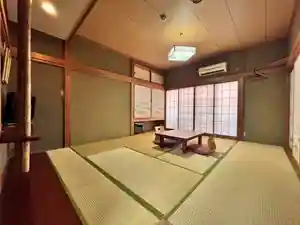
Masugataya Ryokan
ＴＡＣＯ ＧＬＡＭＰ
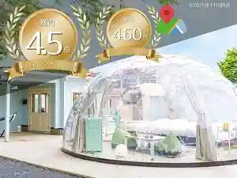
TACO GLAMP
多古の星キャンプ場
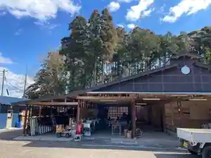
Tako No Hoshi Kyanpu Ba
Dining
九十九里ファーム たまご屋さんコッコ
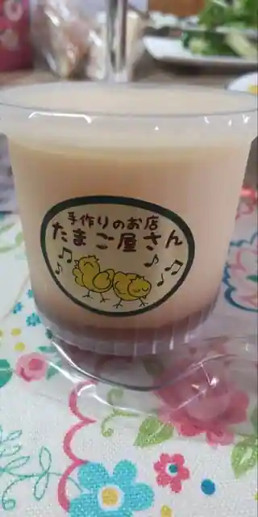
Kujukuri Famu Tamago Ya San Kokko
あきもと食堂
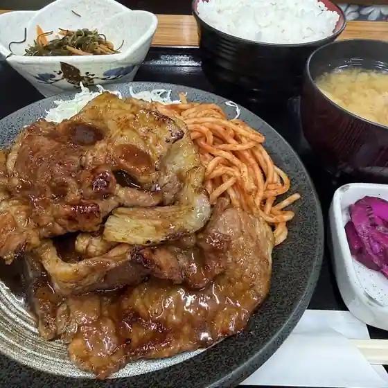
Akimoto Shokudo
タコピザ アンド バーガーズ
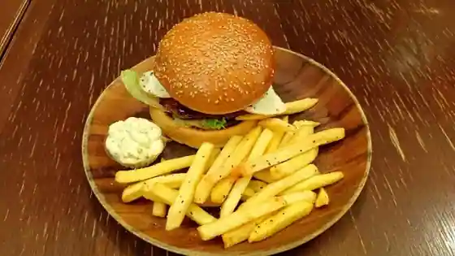
Tako Pizza Ando Burger Zu
支那そば へいきち 多古店
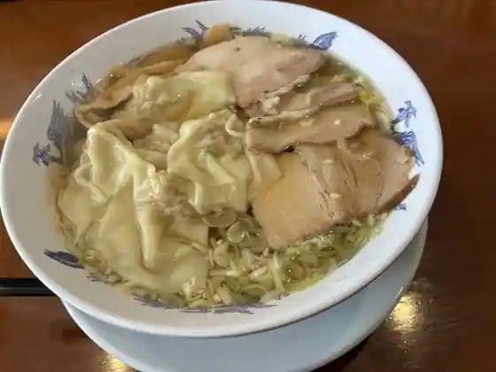
Shina Soba Heikichi Tako
白浜食堂
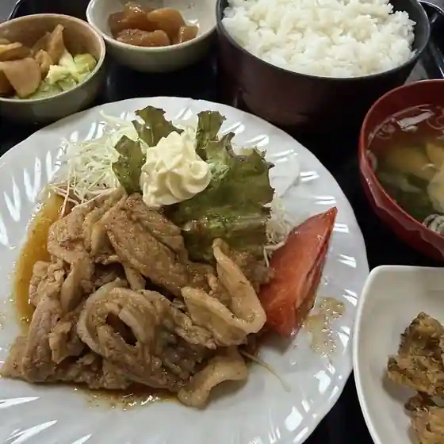
Shirahama Shokudo
Tokyo Castella Park
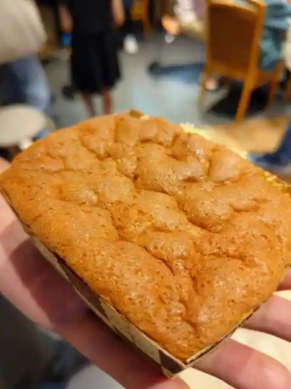
Tokyo Castella Park
キッチンTAKO
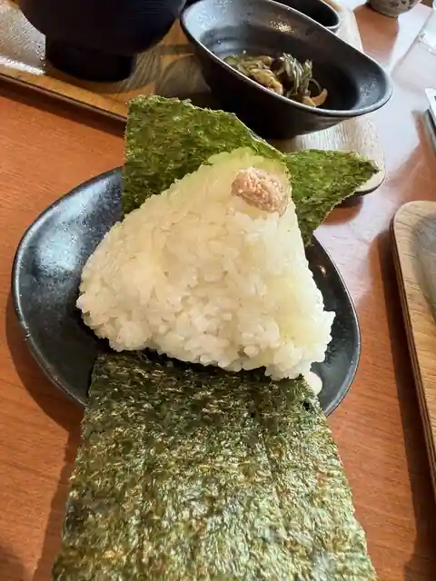
Kitchen TAKO
農園レストラン タコ ヒストリア 871
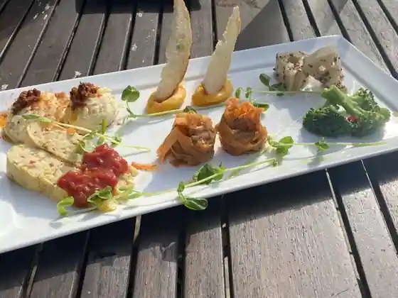
Noen Restaurant Tako Hisutoria 871
泉ベーカリー 本店
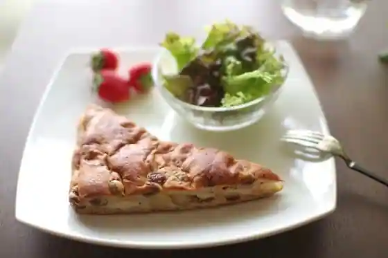
Izumi Bakery Hon
ラーメンショップ ◯化 多古店
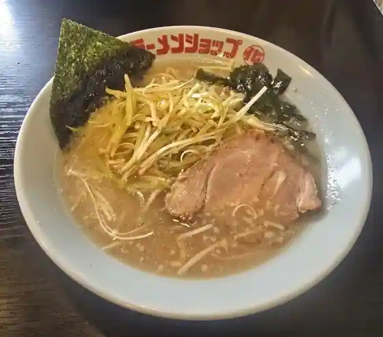
Ramen Shoppu Ka Tako
多古カントリークラブ レストラン
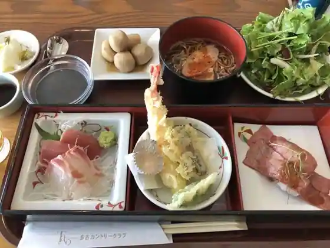
Tako Kantorikurabu Restaurant
道の駅 多古
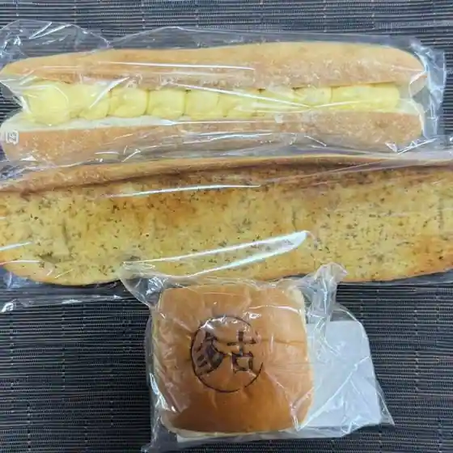
Michi No Eki Tako
タコ庵
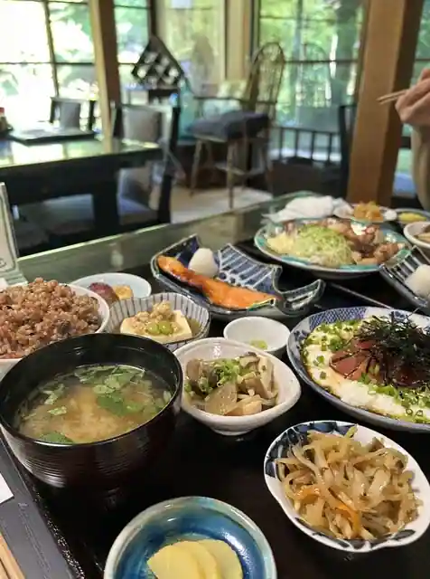
Tako Iori
らぁ麺 綾海105
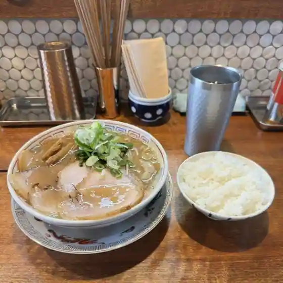
Ra Men Aya Umi 105
レストラン かぼちゃハウス
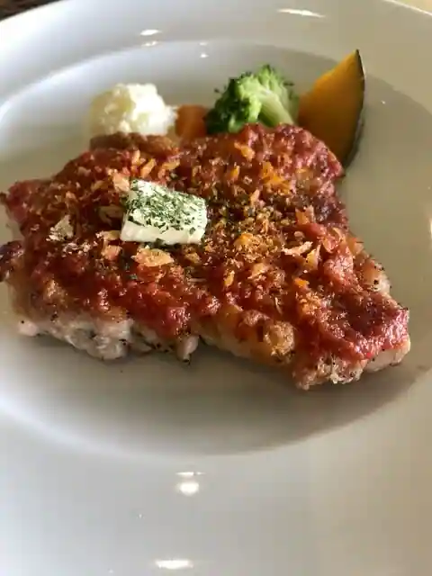
Restaurant Kabocha House
釜屋支店
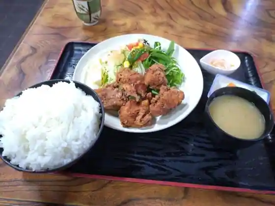
Kamaya Shi
白石菓子舗
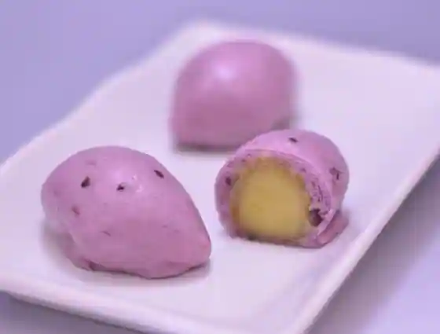
Shiroishi Kashi Ho
ゴルフ倶楽部成田ハイツリーレストラン
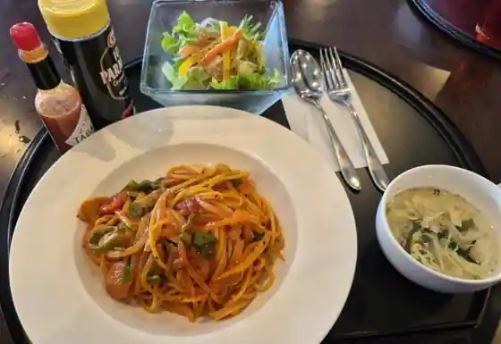
Gorufu Kurabu Narita Haitsuri Restaurant
今出屋
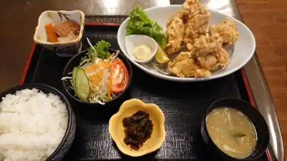
Imaide Ya
みなとや食堂
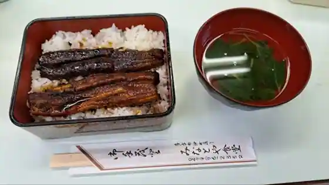
Minatoya Shokudo
浪花家食堂
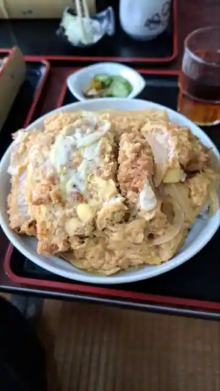
Naniwa Ie Shokudo
和洋食・酒 うららぎ
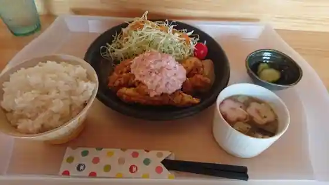
Wayo Shoku Sake Uraragi
東京国際空港ゴルフ倶楽部 レストラン
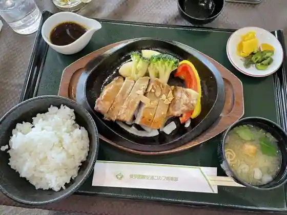
Tokyokokusaikuko Gorufu Kurabu Restaurant
星灯りテラス
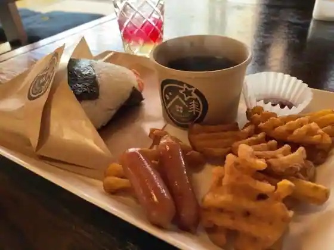
Hoshi Akari Terrace
Sights
Roadside Station Tako Ajisai Kan
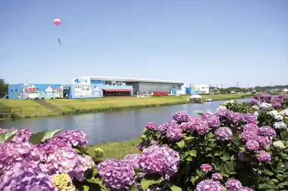
TACO GLAMP
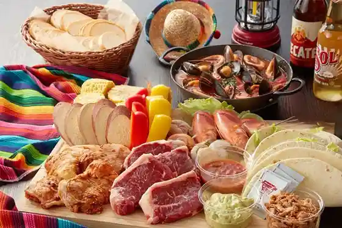
Kujukuri Farm Tamago Ya San Cocco
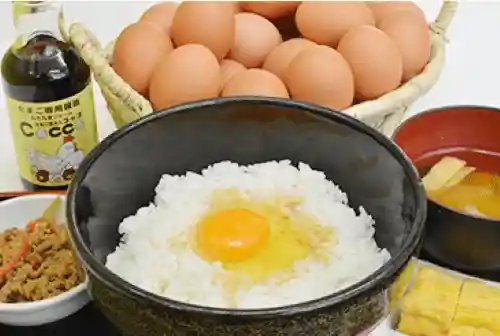
Seito Yama Nippon Tera
Dobashi Santo Zendera
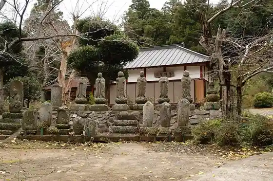
Tako Miryoku Hasshin Koryu Kan (Takorabo)
Myo In Yama Myoko Tera
Shibuya Kasuke Kyutaku Seimon
Kiuchi Ie House